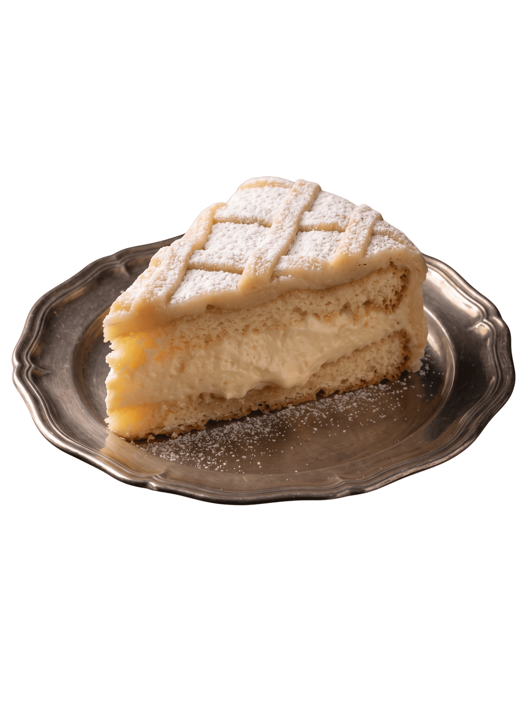
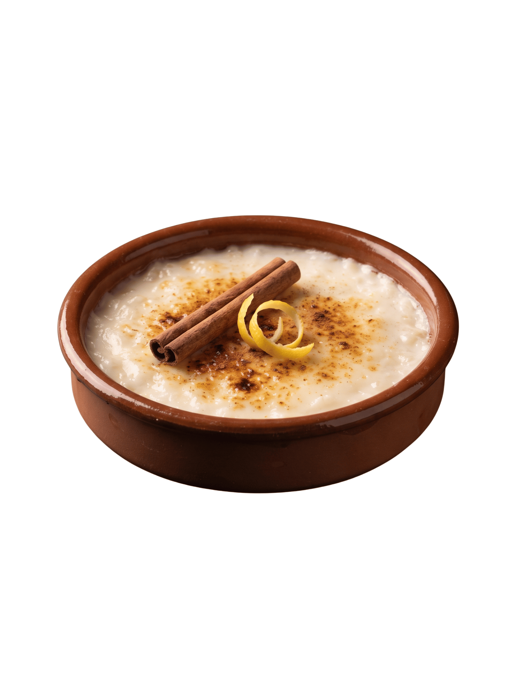
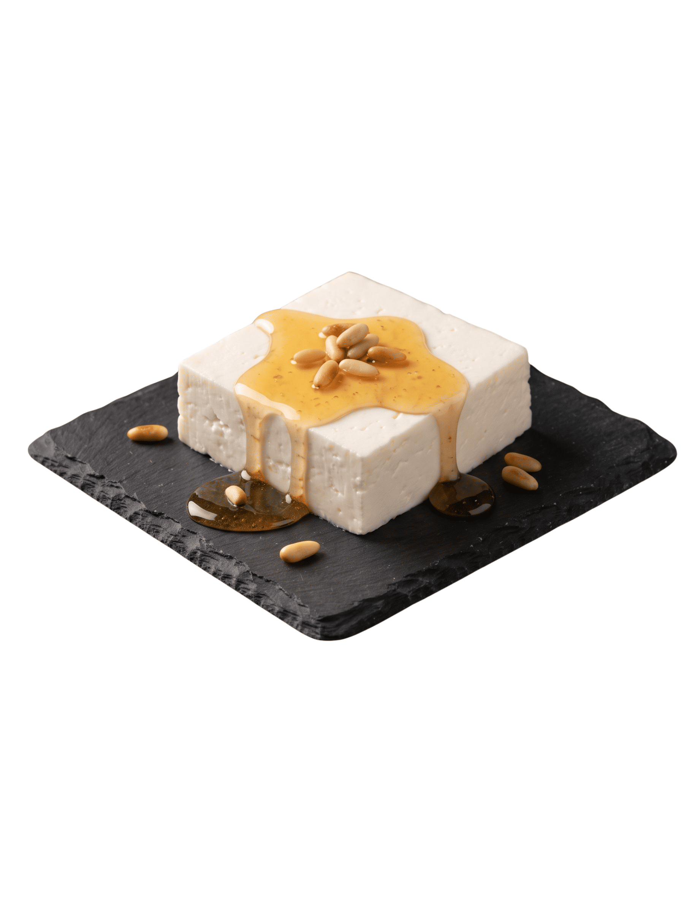
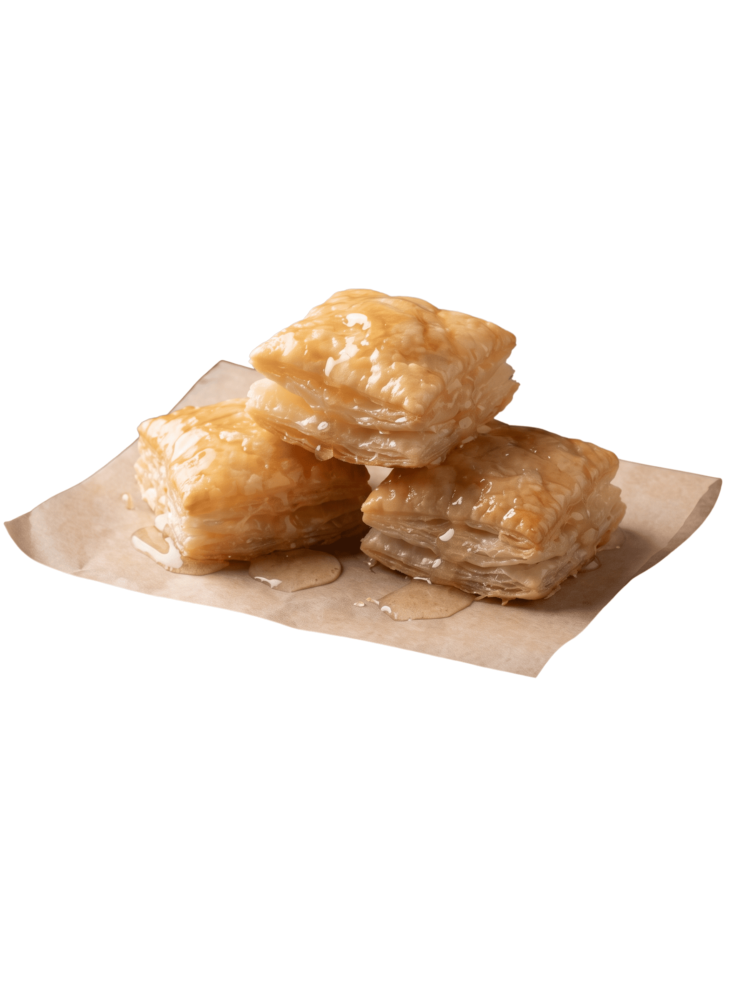
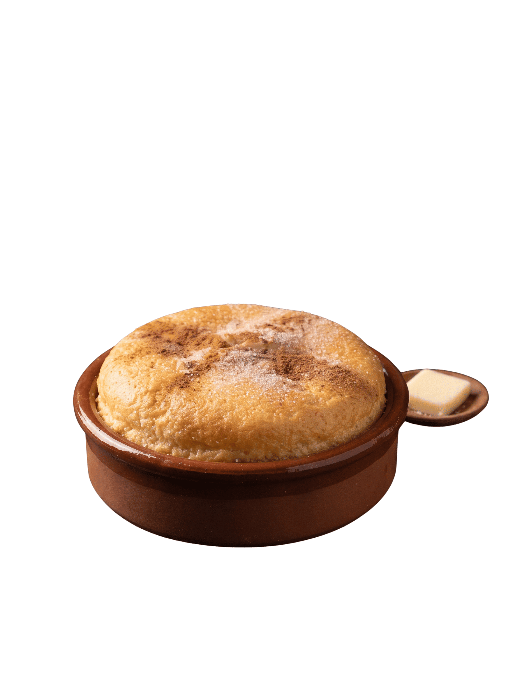
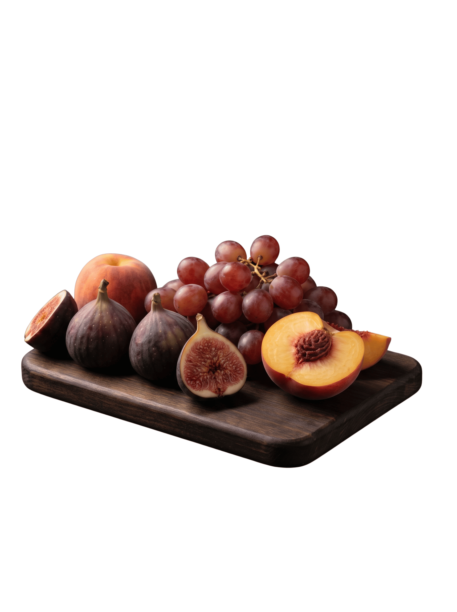

Ponche Segoviano tradicional con mazapán y crema pastelera.

Arroz con Leche aromatizado con canela y limón al estilo de la abuela.

Queso Fresco de Burgos con Miel de los páramos castellanos.

Hojaldres de Astorga artesanales bañados en almíbar.

Mantecadas de la Tierra con un toque de canela y mantequilla fina.

Fruta de Temporada de los campos de Castilla seleccionada en su punto óptimo.
